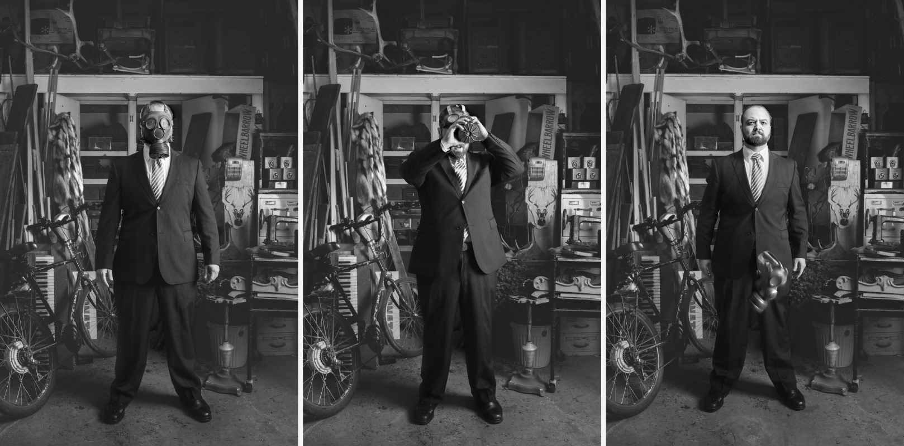

Marc Adornato, visual artist
Mastermind of the public protest performance art piece #MyProtest.
Click the above photo to view more from this collaboration

Mastermind of the public protest performance art piece #MyProtest.
Click the above photo to view more from this collaboration
I documented part of the recording process of Jim's newest album produced by Charles Spearin (Broken Social Scene/Do Make Say Think) at The Lincoln County Social Club in Toronto, ON.
From the series, The Songwriter
From the series, The Songwriter
Ottawa Bluesfest, 2012
Ottawa Bluesfest, 2012
Digital composite at a rehearsal of local band Pony Girl.
Digital composite of Caroline's performance of her piece 'Tilting-Resettlement'. Working in collaboration to create a piece for the show Développé, this piece reflects a selection of movements found in Caroline's work.
Working in collaboration for the shows Otherwise Than Seeing and TEASE, these works isolate key moments in Ben's performance of Nudity, Desire.
Click the above photo to view more from this collaboration